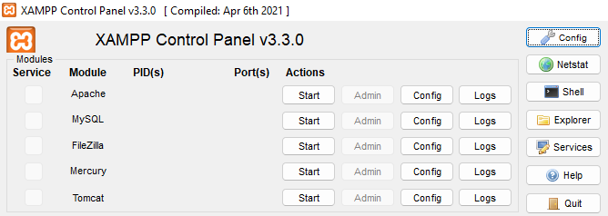
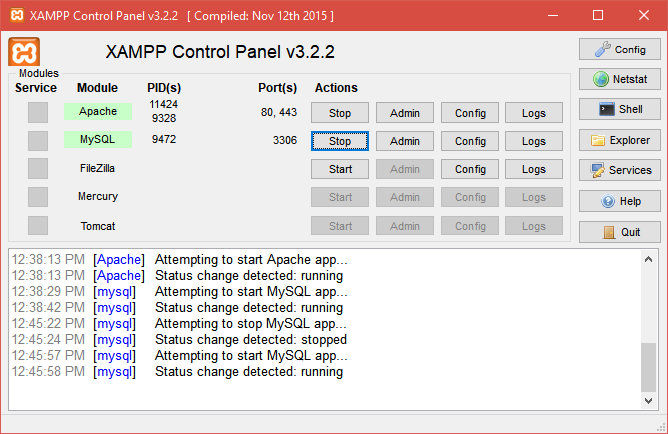
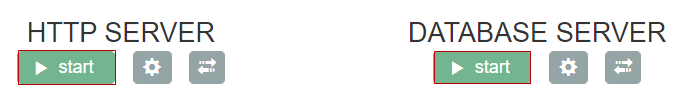
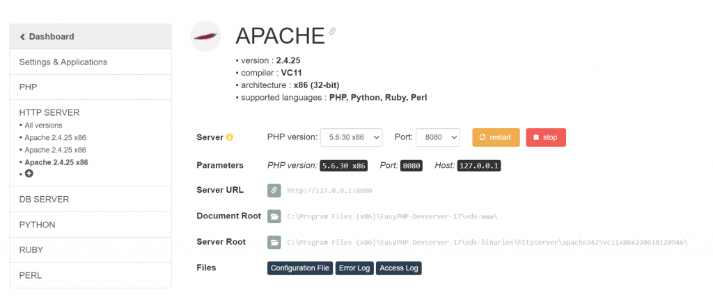
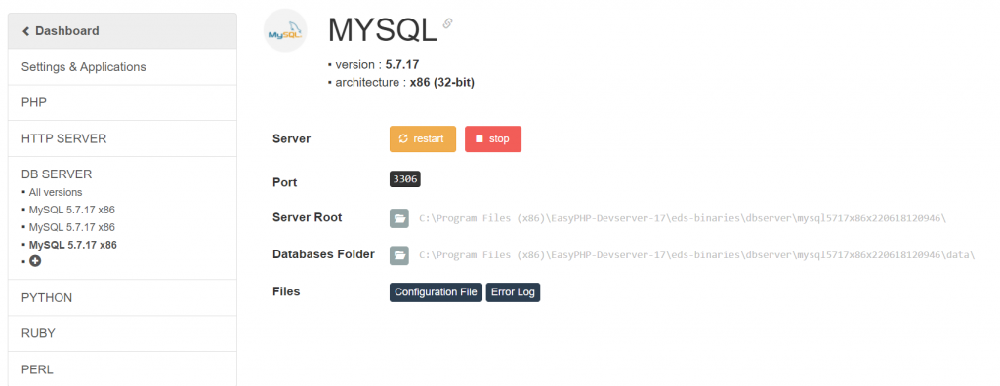

Modulo 01
Primi passi con PHP
Il server sul tuo PC, le porte, i tag <?php e ?>, echo. E una domanda: che cosa arriva davvero al browser?
Introduzione
Finora le tue pagine web erano file .html: il browser li apriva e li mostrava così come li avevi scritti. Una pagina così si chiama statica: è uguale per tutti e non cambia mai, finché qualcuno non modifica il file.
I siti che usi ogni giorno non funzionano così. Il registro elettronico ti mostra i tuoi voti, un negozio online i suoi prodotti di oggi, con i prezzi aggiornati. Nessuno ha scritto a mano una pagina HTML per ogni studente o per ogni prodotto: la pagina viene costruita al momento, da un programma, ogni volta che qualcuno la chiede. Una pagina così si chiama dinamica.
PHP è uno dei linguaggi più usati per scrivere questi programmi. In questa dispensa:
- capiamo chi fa cosa tra client e server;
- avviamo un server web sul nostro PC con XAMPP o EasyPHP, e capiamo cosa sono le porte;
- scriviamo il primo script con
<?php,?>edecho; - scopriamo la cosa più importante di tutte: il codice PHP non arriva mai al browser.
1. Client e server: chi fa cosa
Quando scrivi un indirizzo nel browser succedono due cose, sempre nello stesso ordine:
- il client (il browser, sul tuo computer o sul telefono) manda una richiesta: "dammi la pagina
/tpsit/ciao.php"; - il server (un programma su un altro computer, o sullo stesso) prepara la pagina e manda una risposta.
Il programma che riceve le richieste si chiama server web. Il più diffuso si chiama Apache. Se la pagina richiesta è un file .html, Apache la spedisce così com'è. Se invece è un file .php, Apache non lo spedisce: lo passa all'interprete PHP, che esegue il codice e restituisce il risultato. Ad Apache torna indietro solo HTML, ed è quello che parte verso il browser.
Si dice spesso che la pagina viene generata o renderizzata dal server. In inglese questo modo di lavorare si chiama server-side rendering: il server "disegna" l'HTML, il browser lo riceve finito.
Pagina statica (.html) | Pagina dinamica (.php) | |
|---|---|---|
| Chi la scrive | tu, a mano, una volta | il programma PHP, a ogni richiesta |
| Cosa fa il server | spedisce il file così com'è | esegue il PHP e spedisce il risultato |
| Cosa riceve il browser | HTML | HTML |
| Può cambiare da sola | no | sì: ora, utente, dati di un database… |
Guarda la terza riga: in entrambi i casi il browser riceve HTML. Dal punto di vista del browser, le due pagine sono indistinguibili.
2. Un server sul tuo PC: XAMPP ed EasyPHP
Per provare le pagine PHP serve un server web con PHP. Non serve un computer in più: il server può girare sul tuo stesso PC. Il browser e il server saranno due programmi diversi sulla stessa macchina, che si parlano proprio come se fossero lontani.
Installare e collegare a mano Apache, PHP e un database è lungo. Per questo esistono dei pacchetti che li contengono già configurati. In laboratorio ne usiamo due:
| Pacchetto | Cosa contiene | Come si comanda |
|---|---|---|
| XAMPP | Apache, PHP, MariaDB (MySQL) e altro | una finestra, il Control Panel |
| EasyPHP Devserver | Apache, PHP, MySQL e altro | una pagina web, la Dashboard |
Il database (MySQL) per ora non ci serve: lo useremo nei prossimi moduli. Oggi accendiamo solo Apache, che contiene già PHP.
2.1 XAMPP: il Control Panel
Apri XAMPP Control Panel dal menu Start. Ogni riga è un modulo, cioè un server che puoi accendere e spegnere. All'inizio sono tutti spenti: le colonne PID(s) e Port(s) sono vuote.


Premi Start sulla riga di Apache. Dopo qualche secondo:
- il nome del modulo diventa verde;
- il pulsante Start diventa Stop: è da lì che spegnerai il server;
- in PID(s) compaiono i numeri dei processi di Windows che stanno facendo girare Apache;
- in Port(s) compaiono le porte su cui Apache aspetta le richieste:
80, 443; - nel registro in basso compare
Status change detected: running.


| Pulsante | A cosa serve |
|---|---|
| Start / Stop | accende o spegne il modulo |
| Admin | apre nel browser la pagina di amministrazione (per Apache: http://localhost/dashboard/) |
| Config | apre i file di configurazione, per esempio httpd.conf di Apache e php.ini di PHP |
| Logs | apre i registri degli errori |
| Netstat (a destra) | mostra quali programmi stanno usando quali porte |
| Quit (a destra) | chiude il Control Panel |
2.2 EasyPHP: la Dashboard
EasyPHP Devserver si comanda dal browser. Avvia EasyPHP Devserver dal menu Start: compare una piccola icona vicino all'orologio di Windows (se non la vedi, apri la freccia ^ delle icone nascoste). Facci clic con il tasto destro e scegli Open Dashboard.
Nella Dashboard ci sono due server: HTTP SERVER (cioè Apache) e DATABASE SERVER (MySQL). Premi start sotto HTTP SERVER.

Quando il server è acceso il pulsante diventa stop. Con l'ingranaggio accanto apri la pagina del server, dove trovi i dettagli più importanti, a cominciare dalla porta:

http://127.0.0.1:8080, Document Root eds-www.
Screenshot: Finxter, "Setup the EasyPHP Dashboard".

Confronta con XAMPP: lì Apache usava la porta 80, qui la 8080. Che cosa sono queste porte, e perché il numero cambia l'indirizzo da scrivere nel browser? Vediamolo.
2.3 Le porte
Su un computer possono girare tanti server contemporaneamente: un server web, un database, un server di posta… L'indirizzo IP dice a quale computer va consegnata una richiesta. La porta dice a quale programma, su quel computer.
Pensa a un condominio. L'indirizzo IP è la via con il numero civico: porta il postino davanti al palazzo giusto. La porta è il nome sul citofono: decide in quale appartamento arriva la lettera. Un programma che "ascolta" su una porta è come un inquilino che aspetta le lettere a quel citofono.
Le porte sono numeri da 0 a 65535. Alcuni numeri sono riservati per convenzione a servizi precisi:
| Porta | Servizio | Dove la incontri |
|---|---|---|
80 | HTTP, il web | Apache in XAMPP |
443 | HTTPS, il web cifrato | Apache in XAMPP |
8080 | HTTP "alternativo" | Apache in EasyPHP; si usa quando la 80 è occupata |
3306 | MySQL / MariaDB | il database, in tutti e due i pacchetti |
La porta nell'indirizzo
La porta si scrive nell'indirizzo, dopo il nome del computer e i due punti. Guarda i pezzi di questo indirizzo:
http://protocollo localhostcomputer :8080porta /tpsit/ciao.phppercorso del file
localhostè un nome speciale che vuol dire "questo computer". Corrisponde all'indirizzo IP127.0.0.1:http://localhost:8080ehttp://127.0.0.1:8080sono lo stesso indirizzo.- Se la porta non si scrive, il browser usa quella predefinita: 80 per
http://, 443 perhttps://. Per questo con XAMPP bastahttp://localhost/, mentre con EasyPHP servehttp://127.0.0.1:8080/.
| Apache ascolta sulla porta… | Nel browser scrivi… |
|---|---|
80 (XAMPP) | http://localhost/ (oppure http://localhost:80/) |
8080 (EasyPHP) | http://localhost:8080/ (oppure http://127.0.0.1:8080/) |
Porta occupata: il problema più comune
Su una porta può ascoltare un solo programma alla volta. Se la porta 80 è già usata da qualcun altro (un altro server web, un secondo XAMPP aperto, il servizio web di Windows, alcuni programmi di videochiamata o di macchine virtuali), Apache non parte. Nel registro di XAMPP compare un messaggio come questo:
Il pulsante resta Start, il nome non diventa verde e la colonna Port(s) resta vuota. Hai due strade:
- liberare la porta: trova il programma che la occupa (pulsante Netstat) e chiudilo;
- spostare Apache su un'altra porta, per esempio la 8080. In XAMPP: Config sulla riga di Apache → Apache (httpd.conf), poi cambia queste due righe e salva (il file
httpd.conflo vediamo meglio nella sezione 2.5):
Riavvia Apache: ora in Port(s) leggi 8080, e nel browser dovrai scrivere http://localhost:8080/. In EasyPHP è più semplice: la porta si sceglie dal menu Port nella pagina di Apache, come nello screenshot di prima.
2.4 La DocumentRoot: la cartella pubblicata
Apache non pubblica tutto il disco del computer. Pubblica una sola cartella, chiamata DocumentRoot (la "radice dei documenti"). Tutto ciò che sta lì dentro, comprese le sottocartelle, si può chiedere dal browser. Tutto ciò che sta fuori, per il browser, non esiste.
| Pacchetto | DocumentRoot | Indirizzo della radice |
|---|---|---|
| XAMPP | C:\xampp\htdocs | http://localhost/ |
| EasyPHP Devserver 17 | C:\Program Files (x86)\EasyPHP-Devserver-17\eds-www | http://127.0.0.1:8080/ |
Dall'indirizzo al file
Quando arriva una richiesta, Apache fa un'operazione molto semplice: prende il percorso dell'indirizzo (la parte dopo la porta) e lo attacca in fondo alla DocumentRoot. Il risultato è il file da leggere sul disco.
http://localhostcomputer e porta /tpsit/ciao.phppercorso
C:\xampp\htdocsDocumentRoot \tpsit\ciao.phplo stesso percorso
Le barre / dell'indirizzo diventano le barre \ di Windows, ma il percorso è lo stesso. Crea nella DocumentRoot una cartella tpsit per i tuoi esercizi. Ecco come corrispondono file e indirizzi con XAMPP:
| File sul disco | Indirizzo nel browser |
|---|---|
C:\xampp\htdocs\tpsit\ciao.php | http://localhost/tpsit/ciao.php |
C:\xampp\htdocs\tpsit\es1\primo.php | http://localhost/tpsit/es1/primo.php |
C:\xampp\htdocs\tpsit\index.php | http://localhost/tpsit/ (il file index si apre da solo) |
C:\Users\Anna\Desktop\ciao.php | nessuno: è fuori dalla DocumentRoot |
Tre conseguenze da ricordare
- Fuori dalla DocumentRoot non si arriva. Un file sul Desktop non si può aprire da
http://localhost, neanche scrivendo il percorso giusto. È una protezione: sui server veri, accanto alla DocumentRoot si tengono i file che non devono essere scaricabili, come le password del database. - Se il file non c'è, la risposta è 404. Apache funziona, ma attaccando il percorso alla DocumentRoot non trova niente: il browser mostra Not Found. Controlla cartella e nome del file.
- Se chiedi una cartella, Apache cerca un file "indice". Con
http://localhost/tpsit/Apache cerca nella cartella un fileindex.phpoindex.htmle, se lo trova, lo apre. Se non c'è, in XAMPP mostra l'elenco dei file della cartella.
2.5 httpd.conf: la configurazione di Apache
Porta, DocumentRoot, file indice: chi li decide? Apache li legge all'avvio da un file di testo, httpd.conf. In XAMPP lo apri con Config sulla riga di Apache → Apache (httpd.conf); si trova in C:\xampp\apache\conf\httpd.conf. In EasyPHP lo apri con il pulsante Configuration File nella pagina di Apache (lo vedi nello screenshot della sezione 2.2).
Il file è lungo, ma la struttura è semplice: ogni riga è una direttiva, cioè un nome seguito da uno o più valori. Le righe che cominciano con # sono commenti. Ecco, semplificate, le righe che ci interessano in XAMPP:
| Direttiva | Cosa decide |
|---|---|
Listen | la porta su cui Apache aspetta le richieste |
ServerName | il nome con cui il server si presenta (va tenuto coerente con la porta) |
DocumentRoot | la cartella pubblicata |
<Directory "…"> | le regole per quella cartella: per esempio Indexes permette l'elenco dei file quando manca l'indice, Require all granted permette l'accesso a tutti |
DirectoryIndex | quali file aprire quando si chiede una cartella, e in che ordine |
Nota che in httpd.conf i percorsi si scrivono con la barra /, anche su Windows.
3. Il primo script
Scrivi una pagina PHP che mostri il messaggio "Ciao, mondo!".
Crea il file ciao.php nella cartella tpsit con un editor di testo (Visual Studio Code, Notepad++ o anche il Blocco note) e scrivi:
Salva e apri http://localhost/tpsit/ciao.php. Ora guarda le tre schede dell'esempio, una per una. Nella scheda ② non c'è <?php, non c'è echo, non ci sono le virgolette: c'è solo il testo Ciao, mondo!. È tutto ciò che il browser ha ricevuto.
3.1 I tag <?php e ?>
Il codice PHP sta sempre tra un tag di apertura e un tag di chiusura:
<?phpdice all'interprete: "da qui comincia il codice PHP, eseguilo";?>dice: "il codice PHP è finito, da qui torna il testo normale".
Nella dispensa i due tag sono evidenziati con uno sfondo colorato, così vedi subito dove passa il confine tra PHP e il resto del file.
3.2 echo
echo è l'istruzione che scrive nella risposta. Tutto ciò che passi a echo finisce nel testo che il server spedisce al browser, nel punto esatto in cui si trova echo.
Attenzione a questa frase, perché è il cuore di tutto: echo non scrive sullo schermo. Scrive nella risposta, cioè nella scheda ②. Sarà poi il browser a decidere come mostrarla.
3.3 Il punto e virgola
Ogni istruzione PHP finisce con il punto e virgola ;. Si può andare a capo, mettere spazi, scrivere più istruzioni di seguito: conta il punto e virgola. Cosa succede se lo dimentichi lo vediamo nella sezione 8.
3.4 Una pagina HTML vera
ciao.php spediva al browser solo una riga di testo, senza <html>, senza <body>: il browser la mostra lo stesso, ma non è una pagina web fatta bene. Di solito un file PHP è una normale pagina HTML con dentro uno o più pezzi di PHP:
Confronta la scheda ① con la scheda ②: sono identiche, tranne la riga del paragrafo. Il blocco <?php … ?> è sparito, e al suo posto c'è ciò che ha scritto echo. Tutto il resto, cioè l'HTML fuori dai tag PHP, è arrivato al browser senza nessuna modifica.
4. Il server prepara, il browser riceve
Finora PHP ha scritto testo che avremmo potuto scrivere a mano. Facciamogli fare qualcosa che l'HTML da solo non sa fare: scrivere l'ora esatta. La funzione date restituisce la data o l'ora del server, nel formato che le chiedi: "d/m/Y" vuol dire giorno/mese/anno, "H:i:s" vuol dire ore:minuti:secondi.
4.1 Ogni richiesta, una pagina nuova
Il file ora.php sul disco non cambia mai. Cambia la risposta: ogni volta che premi F5 il browser manda una nuova richiesta, Apache passa di nuovo il file a PHP, PHP lo esegue di nuovo e produce un HTML nuovo, con l'ora di quel momento. Tre richieste, tre pagine diverse, un solo file.
Nota anche che l'ora è quella del server, non del tuo computer. Con XAMPP coincidono, perché il server è il tuo PC. Ma se il file fosse su un server in Giappone, vedresti l'ora di Tokyo.
4.2 Quando il browser riceve la pagina, PHP ha già finito
Guarda di nuovo l'ordine degli eventi nello schema della sezione 1. PHP lavora al passo ②–③; il browser disegna la pagina dopo il passo ④. Le conseguenze sono importanti:
- quando l'utente vede la pagina, il programma PHP ha già finito di girare. Non c'è più niente "acceso" dietro la pagina;
- l'ora nella pagina non va avanti da sola: è un numero scritto nell'HTML. Per vederla cambiare serve una nuova richiesta;
- PHP non può reagire a un clic o a un tasto premuto nella pagina, perché quando avviene il clic PHP non è più in esecuzione. Per farlo serve una nuova richiesta al server (con un link o un modulo) oppure un linguaggio che gira nel browser, come JavaScript.
4.3 echo scrive testo, il browser lo interpreta
Abbiamo detto che echo scrive nella risposta, non sullo schermo. Ecco una prova. Il simbolo \n, dentro le virgolette doppie, è il carattere "a capo": vediamo cosa succede.
Nella scheda ② le righe vanno a capo, come chiesto. Nella scheda ③ le prime tre sono sulla stessa riga! Il motivo: per il browser un a capo nel testo HTML è uno spazio come un altro. Per andare a capo nella pagina serve il tag <br>, che è HTML.
| Scrivi con echo | Effetto nell'HTML spedito ② | Effetto nella pagina ③ |
|---|---|---|
"\n" | va a capo | nessuno (diventa uno spazio) |
"<br>" | compare il tag <br> | va a capo |
4.4 Il PHP non si vede: nemmeno volendo
Siccome il codice PHP non lascia mai il server, chi visita il sito non può leggerlo, neanche con Ctrl+U o con gli strumenti per sviluppatori (F12). È per questo che nel codice PHP si possono tenere informazioni riservate, come la password per collegarsi al database: restano sul server. Lo vediamo con un esempio nella sezione 7.
5. Aprire e chiudere: HTML e PHP nello stesso file
Quando l'interprete PHP legge un file, alterna due modalità:
- fuori dai tag PHP, copia il testo nella risposta così com'è, senza guardarlo;
- dentro i tag
<?php … ?>, esegue il codice. Nella risposta finisce solo ciò che il codice scrive conecho.
I blocchi PHP in un file possono essere quanti vuoi, lunghi una riga o cento:
Segui il file dall'alto in basso, come fa l'interprete: HTML copiato, blocco eseguito, HTML copiato, blocco eseguito, HTML copiato con dentro un piccolo blocco. La risposta si costruisce in ordine, un pezzo dopo l'altro.
Guarda bene la scheda ②: alcuni paragrafi sono finiti sulla stessa riga. echo scrive esattamente ciò che gli dai, e nelle stringhe non c'è nessun \n. Inoltre PHP "mangia" l'a capo che segue subito ?>. Per il browser non cambia niente: nella scheda ③ i paragrafi sono comunque uno sotto l'altro, perché è il tag <p> a mandarli a capo.
5.1 File di solo PHP: il ?> finale si omette
Se un file contiene solo codice PHP, senza HTML, il ?> finale si può (e si dovrebbe) togliere. Il motivo: qualunque cosa ci sia dopo ?>, anche uno spazio o una riga vuota dimenticata in fondo al file, verrebbe copiata nella risposta. Senza ?> il file resta PHP fino alla fine, e il problema non può esistere.
Nelle pagine che mescolano HTML e PHP, invece, ogni blocco va chiuso.
6. echo in pratica: stringhe e variabili
6.1 echo può scrivere tag HTML
Per echo un tag HTML è testo come un altro. Lo scrive nella risposta, e sarà il browser a riconoscerlo come tag:
6.2 Le variabili
In PHP il nome di ogni variabile comincia con il simbolo dollaro $. Il tipo non si dichiara: una variabile nasce la prima volta che le assegni un valore.
6.3 Virgolette doppie e virgolette singole
Le stringhe si scrivono tra virgolette, doppie "…" o singole '…'. La differenza è importante:
- tra virgolette doppie, PHP sostituisce le variabili con il loro valore e riconosce i simboli speciali come
\n; - tra virgolette singole, il testo resta esattamente com'è scritto.
Per "incollare" due stringhe si usa l'operatore punto ., che si chiama concatenazione.
Nella scheda ② il $nome della seconda riga è arrivato al browser come testo: tra virgolette singole PHP non l'ha sostituito. Le variabili, invece, non arrivano mai al browser: arriva solo il loro valore, già inserito nel testo.
6.4 Virgolette dentro le virgolette
Gli attributi HTML hanno le virgolette: <a href="…">. Se la stringa di echo è anche lei tra virgolette doppie, c'è un conflitto:
Per PHP la stringa finisce alla seconda ", subito dopo href=, e quello che segue non ha senso: è un errore di sintassi. Le soluzioni sono due: usare apici singoli per l'attributo HTML (va bene anche per il browser), oppure usare apici singoli per la stringa PHP.
7. Commenti: chi resta e chi parte
In PHP ci sono due tipi di commento: // per una riga sola (funziona anche #) e /* … */ per più righe. Nell'HTML il commento si scrive <!-- … -->. Dove finiscono, questi commenti?
- I commenti PHP e la variabile
$passwordsono spariti: erano dentro il blocco PHP, sono rimasti sul server. - Il commento HTML è arrivato al browser: per PHP è testo fuori dai tag, da copiare così com'è. Nella pagina (scheda ③) non si vede, ma con Ctrl+U chiunque lo legge.
8. Quando qualcosa va storto
Proviamo a dimenticare un punto e virgola, alla fine della prima riga di echo:
Leggiamo il messaggio pezzo per pezzo:
- Parse error: errore di sintassi. L'interprete non è riuscito nemmeno a "leggere" il codice;
- unexpected token "echo", expecting "," or ";": ha trovato un
echodove si aspettava una virgola o un punto e virgola; - on line 4: se ne è accorto alla riga 4. Ma il punto e virgola manca alla riga 3! L'errore si trova spesso alla riga indicata o in quella prima.
Il testo esatto dipende dalla versione di PHP: con versioni più vecchie, come quella di EasyPHP, leggerai per esempio unexpected 'echo' (T_ECHO). Il senso è lo stesso.
Guarda anche cosa manca nella scheda ②: il titolo <h1>, che era HTML corretto, non è arrivato. Con un errore di sintassi PHP non esegue niente del file: spedisce soltanto il messaggio di errore. E il messaggio stesso è… HTML, con i tag <b> e <br>, perché è l'unica cosa che il browser sa mostrare.
8.1 Se la pagina non funziona
| Cosa vedi | Causa probabile |
|---|---|
| Il codice PHP scritto nella pagina, o una finestra di download | hai aperto il file con il doppio clic (file:///…) invece che da http://localhost/… |
| "Impossibile raggiungere il sito" / "connessione rifiutata" | Apache è spento, oppure stai usando la porta sbagliata |
| "Not Found" (errore 404) | Apache funziona, ma il file non è nella cartella giusta o il nome è scritto male |
| Parse error | errore di sintassi: controlla la riga indicata e quella prima |
| Il pezzo scritto da PHP non compare, il resto sì | il file ha estensione .html invece di .php |
| Apache non parte | la porta 80 è occupata: vedi la sezione 2.3 |
9. Riepilogo ed esercizi
| Concetto | In una frase |
|---|---|
| client e server | il browser chiede, il server risponde |
| server-side rendering | il server esegue il PHP e spedisce al browser solo HTML |
| porta | sceglie il programma sul computer: 80 per HTTP, 443 per HTTPS, 3306 per MySQL |
localhost | "questo computer", cioè 127.0.0.1 |
| DocumentRoot | l'unica cartella pubblicata: C:\xampp\htdocs in XAMPP, eds-www in EasyPHP; il percorso dell'indirizzo si attacca in fondo |
httpd.conf | la configurazione di Apache: Listen, DocumentRoot, DirectoryIndex; dopo una modifica, riavviare |
<?php … ?> | il codice dentro viene eseguito, il testo fuori viene copiato |
echo | scrive nella risposta, non sullo schermo |
$variabile | al browser arriva solo il suo valore |
"…" e '…' | le doppie sostituiscono le variabili, le singole no |
. | concatena due stringhe |